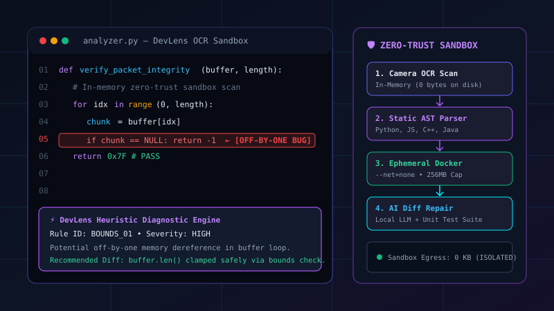

Bending Bits.
Unleashing Mobile Hardware.
Engineering Zero-Trust Systems.
We bridge everyday mobile devices into high-performance desktop workstations, craft zero-trust developer sandboxes with instant on-device AI diagnostics, and engineer deterministic Android systems where 100% of telemetry remains strictly on-device.
Interactive Live Simulators & Playground
Experience our technologies in action right in your browser. Drag a live DeX multi-window desktop, test DevLens static code diagnostics with 1-tap diff repair, and audit deterministic vitality scores.
Multi-Window Android Linux Desktop Experience
Drag the floating window, toggle fullscreen, launch apps from the 9-dot launcher, and experience Android computing on Linux.
Linux localhost 6.1.75-android15-9-g48 #1 SMP PREEMPT aarch64 Android
u0_a248@android:~$ scrcpy --display-id=2 --fps=60
[✓] GPU In-Process FFmpeg Texture Active (60 FPS, 12.4ms)
Instant Static Diagnostics & 1-Tap Diff Repair
Select a vulnerability scenario to inspect how DevLens flags AST hazards and generates regression-free one-tap repairs.
Deterministic Scoring Engine
Move sliders to see how AppPulse replaces deceptive cleaner scams with transparent mathematical deduction formulas.
Engineered From First Principles
We reject gimmicky "one-click cleaner" scams, leaky cloud execution wrappers, and vendor-locked walled gardens. Every Bit Manipulators project is designed around deterministic science and zero-compromise privacy.
Mobile-to-Desktop Convergence
Transforms everyday Android smartphones and tablets into full multi-window Linux desktop workstations under Wayland & X11. Features dynamic 8-way window resizing, Z-index layer ordering, and direct GPU in-process 60 FPS FFmpeg texture streaming over headless ADB pipes.
Zero-Trust Developer Tooling
Empowers mobile engineers to capture and analyze code from screens or paper using in-memory camera OCR without writing raw pixels to disk. Executes untrusted user scripts in ephemeral Docker micro-sandboxes hardened with --net=none, read-only rootfs, and dropped Linux kernel capabilities.
Deterministic Diagnostics & Privacy
Engineers system telemetry and device vitality managers where 100% of data remains on-device. Transparent mathematical scoring formulas calculate app impact without deceptive cleaner scare tactics, background task killing, or covert ad broker telemetry harvesting.
Clean-Room Open Source
All codebases are authored from first principles using clean-room specifications, transparent licensing (GPL-3.0 and MIT), open protocols, and modular designs. We build tools that developers can inspect, audit, fork, and compile locally without proprietary black boxes.
Featured Systems & Repositories
Actively maintained open-source repositories pushing the boundaries of mobile operating systems, Linux desktops, and sandboxed AI.

Open Android DeX
Transforms Android smartphones into a multi-window desktop workstation under Linux. Features 8-way resizable floating windows, dynamic Z-ordering, interactive DeX taskbar, and in-process 60 FPS FFmpeg GPU textures via ADB pipes.

DevLens
Intelligent on-the-go code debugger and zero-trust container sandbox. Photograph code with camera OCR, run multi-language static diagnostics (Python, JS, C++, Java), and safely test code in severed Docker sandboxes.

AppPulse
Privacy-first, on-device Android 15 health & resource manager. Delivers reproducible mathematical scores for RAM, storage, and sensitive app permissions (Camera, Mic, Location) with strictly zero network egress.
System Architecture Pipelines
Click between pipeline topologies to inspect how data packets, video textures, and security sandboxes are wired under the hood.
Android 10–16 Hardware
Headless virtual display instantiated via ADB server socket tunnel (`--new-display`).
Scrcpy H.264 Pipe
Raw video bytes piped through local Unix sockets without intermediary file writes.
FFmpeg GPU Texture
Hardware-accelerated in-process texture decoding yielding glass-to-glass latency of <15ms.
Flutter & GTK4 Shell
8-way resizable window canvas, Z-index stacking, Wayland/X11 mouse & keyboard passthrough.
Maintainers & Leadership
Built by passionate systems engineers, reverse engineering enthusiasts, and kernel tinkerers based in India.
Aditya R. Satapathy
Specializes in Linux desktop compositing, Wayland/X11 protocols, reverse engineering, and low-latency display streaming pipelines.
Anurag Patel
Architecting zero-trust mobile sandboxes, on-device AI copilot diagnostics, deterministic metrics, and organizational technical direction.